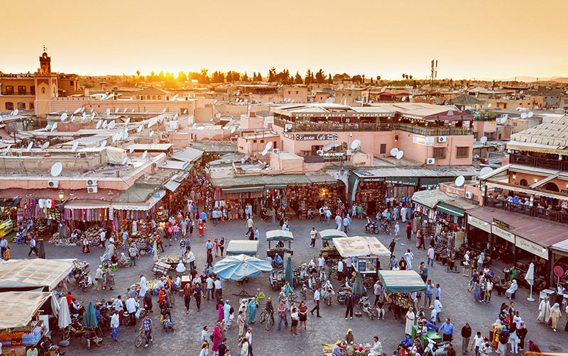

Latar Belakang
Dikutip dari Bappenas (Badan Perencanaan Pembangunan Nasional), UMKM berperan dalam memperluas kesempatan kerja, dan penyerapan tenaga kerja. (Sumber: Kompas)
"Bersama Berdaya, Bertumbuh & Menebar Kebermanfaatan"
UMKM merupakan penggerak roda ekonomi strategis di Indonesia. Dengan keikutsertaan dalam membantu perkembangan mereka di tanah air, tentu saja kami, Manāfi' berharap dapat terlibat dalam kontribusi nyata pada kemajuan dan meningkatnya kesejahteraan bangsa.

Dikutip dari Bappenas (Badan Perencanaan Pembangunan Nasional), UMKM berperan dalam memperluas kesempatan kerja, dan penyerapan tenaga kerja. (Sumber: Kompas)
Berdasar pada sensus Badan Pusat Statistik 2016, bahwa UMKM menyerap 89.2% dari total tenaga kerja. (Sumber: Kompas)
Dari sekitar 99%-nya, UMKM menyumbang hingga 60,34% dari total PDB nasional. (Sumber: Kompas)